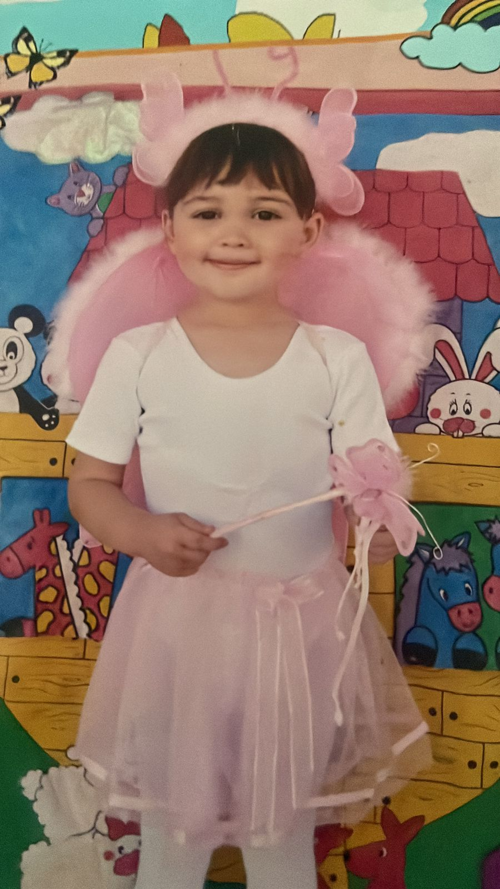

Sobre mí
Hola, esta página es para mi proyecto de programación... Mi nombre es Sigrid, tengo la edad de 17 años lo cual nací en el 2008 más específicamente hablando un 2 de junio... estudio en el CBTIS224 donde es bastante difícil de acoplarse, he hecho unos amigos, no cercanos pero son para andar ahí.
Hablo 3 idiomas actualmente, mi idioma nativo el español latinoamericano, se hablar inglés... no profesionalmente pero puedo entablar muchas conversaciones casuales como políticas. El tercer idioma es el que estoy aprendiendo ahorita, que sería el japonés:
はじめまして わたし わ シグリッド です..
ねんれい 17 さい.
わたし わ がくせん です
わたし わ ビディーオーゲームズ お する の が すき です
No es que lo hable tan fluido como el inglés, sin embargo, se decir varias cosas e escribirlas.
Lo que me gusta
Me gusta mucho salir a plazas y fiestas con amigos. Me apasiona la arquitectura aunque no soy tan buena en matemáticas, pero sí en dibujo. Me gusta jugar videojuegos como Valorant, LoL o Bloxburg. Soy creativa, me gusta la moda y los desfiles; mi modelo favorita es Vlada y me gustó mucho la pasarela de SONIA RYKIEL Spring Summer 2008 Paris. También colecciono arte y disfruto tomar fotos, que es mi nuevo pasatiempo.
Familia y amigos
Mi familia es mi mamá y mi gato Kiwi. Tengo dos medias hermanas llamadas Azul y Abril. Mis amigos son personas que conozco desde hace años. No tengo muchos amigos y no soy muy buena socializando. Mis amigos son de mi antigua escuela, el TecMilenio; los veo no muy seguido por mi horario vespertino. Cuando no los veo, salgo sola o con mi pareja.